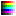

In order to export images that use the Color Index mode, a palette is required. A palette can be generated by pressing the Generate Palette button, located on the bottom right of the program.
The Nintend64 Texture Converter, when using Color Index modes, will automatically generate a palette by reading your image from top to bottom, left to right, adding any new colors it finds to a list. This list can be previewed by clicking the  View Palette button.
When modifying the image's alpha, either through changing the alpha mask, changing the assigned Single Color, or even enabling/disabling the use of alpha, the palette will automatically update, and it is not required to regenerate the palette.
If your image contains more colors than what is supported by your chosen color mode (16 in 4-Bit CI, 256 in 8-Bit CI), the palette generation will fail, and you must dither the image using an external program to reduce its colors.
The color preview matrix on the bottom left of the program will display ???? if no palettes are present. If a palette is present (either an automatically generated one or an imported one), then placing the mouse over a texel will display the palette value instead (with the color it represents in parenthesis).
You can export the current generated palette by pressing the Export Palette button. This allows you to re-import the palette into another image for previewing, or even compilation. Palette swaps are updated in realtime. Palettes are exported in NPL format, which will be explained shortly.
If you attempt to import a palette which contains more or less colors than what is currently in your imported image, the program will warn you about this, but allow you to import anyway.
Every time you import a new image, you must regenerate the palette. This can be inconvenient if you want to import a collection of images, because the order of the colors can change every time you regenerate the palette (due to the order in which colors are added to the list). As a result, you can choose to import a NPL palette which can be used by all subsequent imported images. To make a base palette, simply import an image which uses all the colors available in your collection, generate a palette, and export it. You can then import that palette as a base palette by pressing the Import Base Palette button. The base palette should automatically update in the palette preview.
Note: if one of your imported images contains a color that is not in the base palette, the compilation will fail! You must also ensure that the alpha values match!
The NPL format is very basic and can be modified with a text editor. All files begin with the 3 letter header NPL on its own line, followed by the list of colors in 32-Bit format, written in hexadecimal notation. Every color is separated by a new line.
Here is an example NPL palette containing black, red, green, blue, and white (in that order).
NPL FF FF0000FF FF00FF FFFF FFFFFFFF